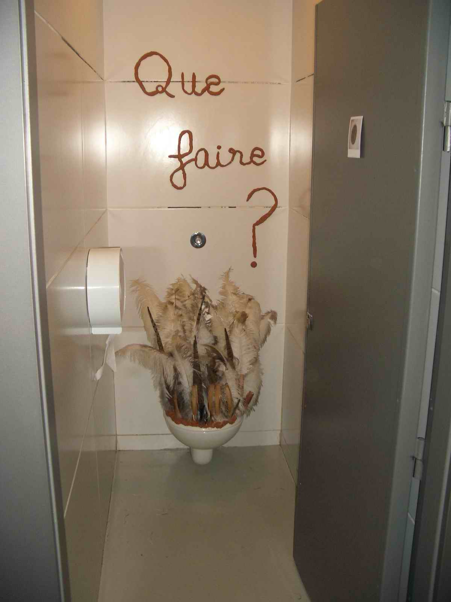
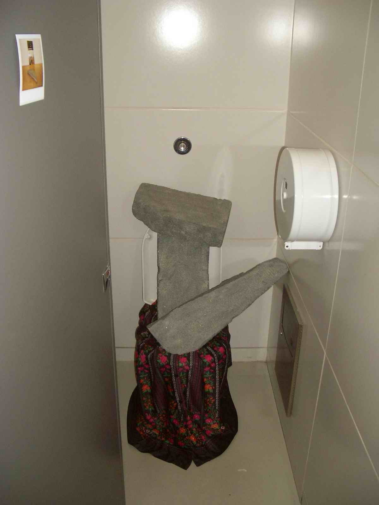
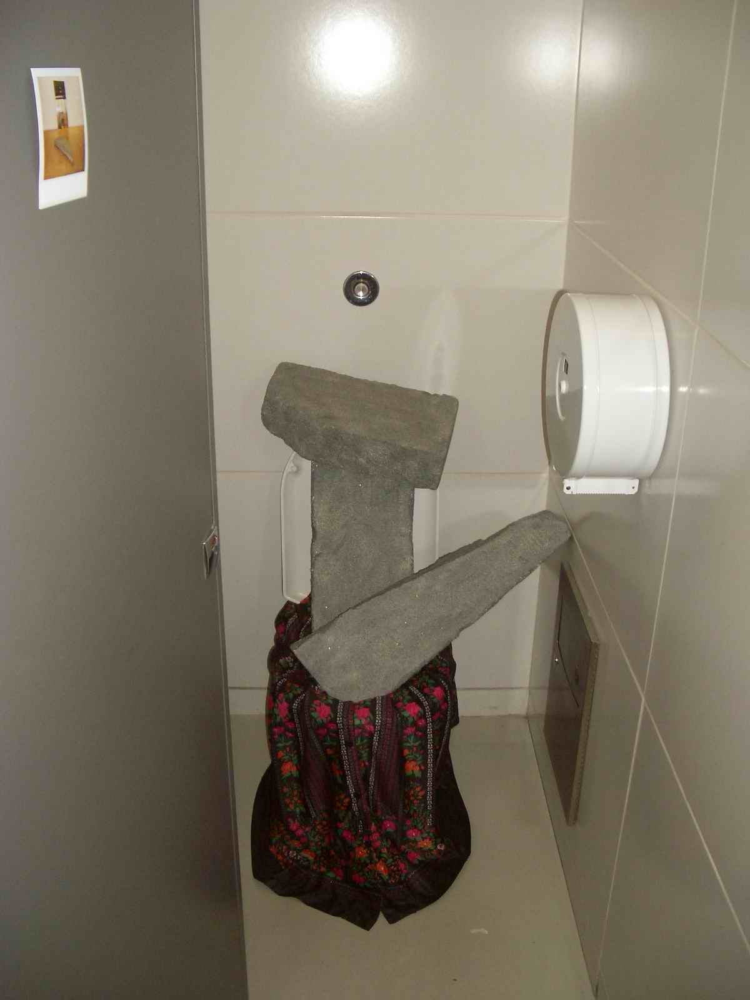

"Les Jeudi's", exhibit at the Centre Pompidou, Paris 2005
| What was this exhibit? Graduate students from ENSAD, the French art school, got to interpret the permanent collection of the Centre Pompidou by juxtaposing their work next to the art in the museum. The goal of the exhibit was to provide new perspectives on the museum's collection. I was tasked to craft the exhibit catalogue but had not been invited to contribute artwork. What happened next? - surprise installation in the restrooms I chose to interpret a couple of Italian Arte Povera works. For the men's room I commented at the two following works of art...
|

| ...in the following way: |


For the ladies' room I commented on the following two pieces: |


The toilet bowl is dressed in a skirt, accompanied by
a couple of massive stones. A mirror opposite the ladies'
room completed the reference to the original art work. |
 
